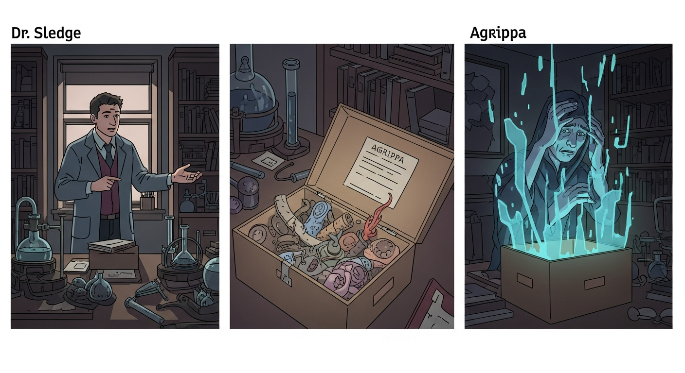
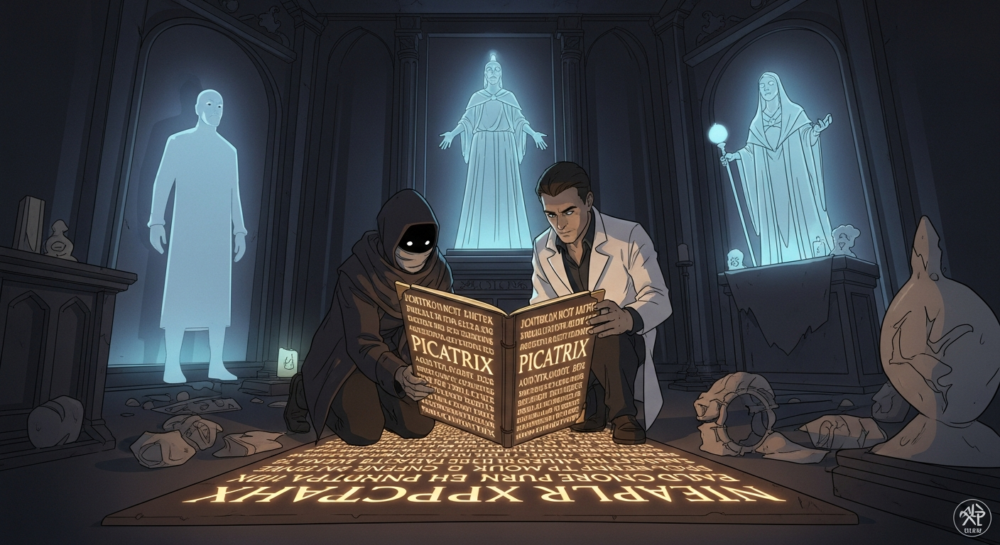

Agrippa, hunched over the *Picatrix* and *Invisibilia Dei*, sought the Node. Justin Sledge materialized. "Tradition is peer pressure from dead people. This path… it’s Arthur C. Clarke’s Mysterious World by way of the *Evil Dead*. Severing the core, as in *The Alchemist's Last Secret*…" Agrippa scoffed, dismissing the warning. Alexander F. watched, a silent observer.

Agrippa proceeded, blind to the inherent risks. The ritual reached its crescendo, and *then* Dee appeared. That is to say, folks, Dee orchestrated this entire debacle? Agrippa’s hubris severed the connection, twisting his knowledge. Suddenly, Sledge was *also* Dee. Understanding, not severance, is the key. Alexander F., merely a sideshow.